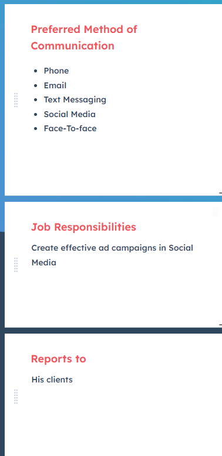

Target Audience
The audience of this website consists of owners of small to medium businesses. The little town of Chacha is not industrial, the main economic activity is wool exportation, but also the town is known for its famous Cha-Cha festival, its beautiful country landscapes, and Mexican restaurants. The audience of chachachamber.com is conformed of men and women between 35 and 65 years old, half of them with a college degree or higher. Some own restaurants, others own farms, and others run nail shops, grocery stores, and beauty salons.
Persona 1


Persona 2
Scenario 1:
Romina is a young freelance marketer that just finished her University and is back in her hometown to try help local businesses increase their reach. She accesses chachachamber.com to access the directory and see what businesses she could help.
Scenario 2:
Erol is a farmer and sheep breeder that is currently suffering of irrigation problems. His irrigators failed recently, causing a shortage of fresh grass to feed their sheep. He needs help with fixing his irrigators, so he wants to access the network in the Chamber by joining it.
Scenario 3:
The Cha-cha festival date is approaching. Sadly, the two past years attendace was low due to the pandemic. This year, Romina wants to take advantage of this and launch a Social Media campaign to help increase the attendance, so she enters chachachamber.com to access historical information about the town, imagery, and other information.
Scenario 4:
Following up on scenario 2, Erol's join request was denied, so he wants to directly contact the Chamber via the website.
Scenario 5:
An investor comes to Chacha and wants to know what are the business spotlights, so he enters chachachamber.com